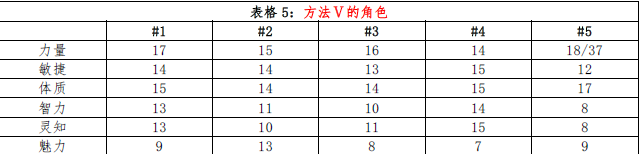

方法 V
方法Ⅴ（4d6，除去最低，自由分配）：
使用该方法之前，应当先确定冒险者在人群中的形象。这里有两种主流的说法。
一种认为冒险者与常人无异（除了有些鲁莽、任性或不安分）。只要愿意，街头上的任何人都可以成为冒险者。因此，冒险者不会在掷属性的时候获得什么特殊奖励。
另一种认为冒险者是特殊的，他们超乎常人。如果他们不出众，就只会和其他人那样当劳工或商人。玩家角色是英雄，所以理应得到属性值的奖励来显得与常人不同。
选用方法V 创建玩家角色就等于赞同第二种说法，认为冒险者应当比其他人都厉害。
该方法能创建出高于平均值的角色。他们并不完美，但即使是他们最糟的属性值，也很可能在平均值以上。更多的属性处于出众的范围（15
以上）。玩家几乎可以创建出属于任何职业和角色的角色。
方法Ⅴ的缺陷：与其他允许自行分配属性的方法相同，该方法耗时偏长。而且它还会产生“超强角色”的倾向。
除非你是经验丰富的DM，否则得要小心滥强角色。他们比起那些中等实力的角色更难受到操纵和挑战。另一方面，他们在低级时的存活率也比“普通”的角色要高得多（关于这部分参考下文的“超强角色”）。
关于法Ⅴ的最后一点是：在这种方法下所得到的高属性并不会让人兴奋，因为它们是更加常见的，这从下面的战士角色中可以看出来：
